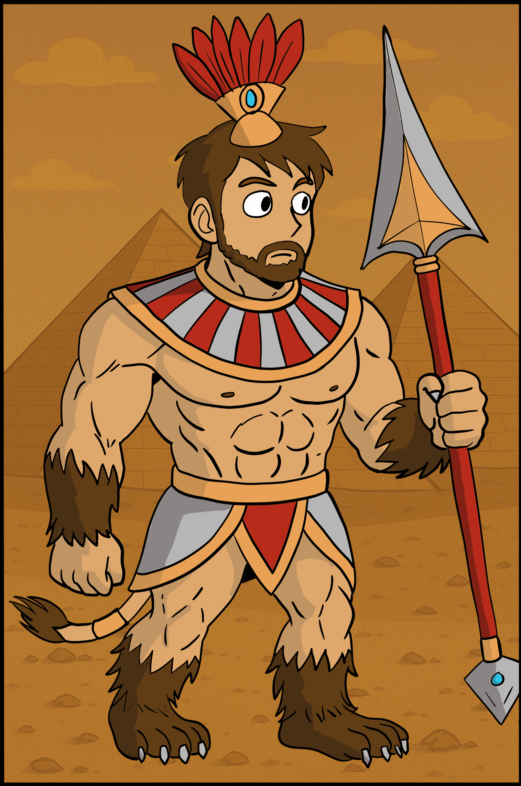
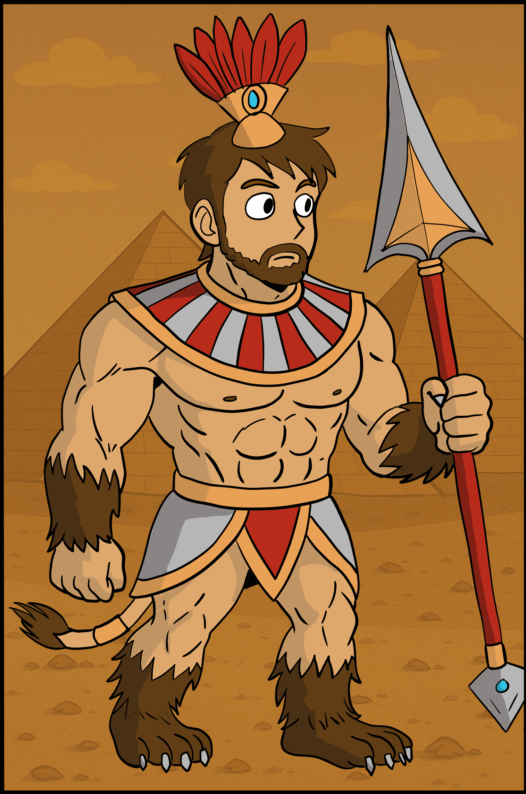

Dungeons & Dragons
Voor een animatieproject dat de subcultuur van Dungeons & Dragons (D&D) in Heerlen zichtbaar maakt,
ontwerp ik een reeks unieke personages. Deze personages zijn gebaseerd op echte spelers en hun zelf
gecreëerde karakters, zoals ze tot leven kwamen tijdens een sessie waarin ik zelf actief heb
meegespeeld.
Het doel van dit project is om de rijke, fantasievolle wereld van D&D te laten zien zoals die in
Heerlen beleefd wordt: niet alleen als spel, maar als creatieve uitlaatklep, sociale ervaring en vorm
van moderne storytelling.

 
